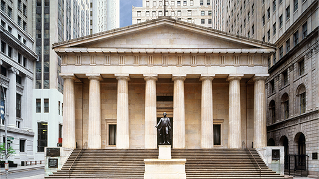
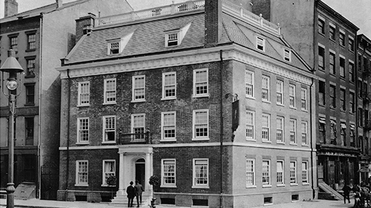
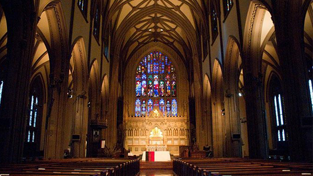
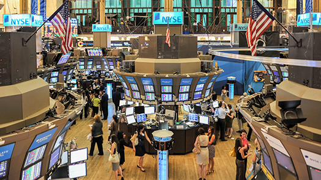
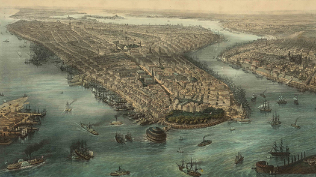

Uncovering Heritage, Freedom, and Culture in NYC's Lower Manhattan

Federal Hall
In 1789, after being elected as the first president, George Washington came to New York for his inauguration at Federal Hall. This building also hosted the very first session of the United States Congress, where the Bill of Rights was drafted. Originally constructed as New York’s City Hall, the current Federal Hall, built in 1842, now serves as a museum that tells the story of America’s beginnings. Visitors can explore Federal Hall either on their own or with a guided tour. Highlights include an original slab from the balcony where Washington took his oath and the Bible he swore upon. The museum also showcases early American financial history and includes artifacts from the period. Federal Hall National Memorial offers history buffs a direct connection to the nation's founding. Admission is free.

Fraunces Tavern
A short stroll from Federal Hall brings you to Fraunces Tavern, a key site during the Revolutionary War. This historic tavern hosted the Sons of Liberty, including figures like Aaron Burr and Alexander Hamilton. Just a week before their infamous duel, they both attended a meeting of The Society of Cincinnati here. Fraunces Tavern is perhaps most famous for being the place where George Washington bid farewell to his troops at the end of the war on December 4, 1783. Visitors can still visit the Long Room where his farewell speech is played, alongside scents that recreate the atmosphere of an 18th-century tavern.The building was initially a private residence built in 1719, but it was transformed into a tavern by Samuel Fraunces in 1762. Though it’s suffered damages, including a hit from a cannonball, it has been preserved due to its historical importance. Today, Fraunces Tavern offers an impressive selection of craft beers and whiskeys, as well as a full menu from brunch to dinner.

Trinity Church
No historical tour of Lower Manhattan would be complete without a visit to Trinity Church. While the current Gothic Revival building was finished in 1846, the church’s origins date back to much earlier. After his inauguration in 1789, George Washington attended a Thanksgiving service at St. Paul’s Chapel, part of Trinity Church Parish and the oldest continuously used public building in NYC. Trinity Church is also the burial site of Alexander Hamilton, his wife Eliza, and her sister Angelica Schuyler. Fans of the Hamilton musical will appreciate visiting the final resting places of these significant historical figures. The church’s stained glass windows are a masterpiece in themselves, spanning different styles from the 19th century to modern additions, making it a stunning sight for visitors.

New York Stock Exchange
While tourists flock to the Charging Bull statue, history enthusiasts know the New York Stock Exchange (NYSE) is the real landmark to see. Founded in 1792, the NYSE played a crucial role in shaping the U.S. financial system. After the Revolutionary War, under Alexander Hamilton's financial plan, the federal government assumed state debts and issued bonds, many of which were traded at the NYSE. For a symbol of empowerment, don’t miss the Fearless Girl statue. Originally placed in front of the Charging Bull, this statue has since been relocated to the Stock Exchange, standing as a powerful symbol for gender equality and diversity in corporate leadership.

The Battery and Castle Clinton
After gaining independence, the U.S. soon found itself at odds with Britain once more during the War of 1812. Castle Clinton, located in The Battery, was built between 1808 and 1811 to defend New York Harbor against British forces. Later, it became the nation’s first immigration processing center before Ellis Island opened, handling over 8 million immigrants between 1855 and 1890. Today, The Battery is a peaceful escape, offering playgrounds, historic monuments, and seasonal events. History lovers will appreciate the Seaglass Carousel, which is a nod to Castle Clinton’s past as New York’s first aquarium.
1 / 5
In 1789, after being elected as the first president, George Washington came to New York for his inauguration at Federal Hall. This building also hosted the very first session of the United States Congress, where the Bill of Rights was drafted. Originally constructed as New York’s City Hall, the current Federal Hall, built in 1842, now serves as a museum that tells the story of America’s beginnings. Visitors can explore Federal Hall either on their own or with a guided tour. Highlights include an original slab from the balcony where Washington took his oath and the Bible he swore upon. The museum also showcases early American financial history and includes artifacts from the period. Federal Hall National Memorial offers history buffs a direct connection to the nation's founding. Admission is free.
2 / 5
A short stroll from Federal Hall brings you to Fraunces Tavern, a key site during the Revolutionary War. This historic tavern hosted the Sons of Liberty, including figures like Aaron Burr and Alexander Hamilton. Just a week before their infamous duel, they both attended a meeting of The Society of Cincinnati here. Fraunces Tavern is perhaps most famous for being the place where George Washington bid farewell to his troops at the end of the war on December 4, 1783. Visitors can still visit the Long Room where his farewell speech is played, alongside scents that recreate the atmosphere of an 18th-century tavern.The building was initially a private residence built in 1719, but it was transformed into a tavern by Samuel Fraunces in 1762. Though it’s suffered damages, including a hit from a cannonball, it has been preserved due to its historical importance. Today, Fraunces Tavern offers an impressive selection of craft beers and whiskeys, as well as a full menu from brunch to dinner.
3 / 5
No historical tour of Lower Manhattan would be complete without a visit to Trinity Church. While the current Gothic Revival building was finished in 1846, the church’s origins date back to much earlier. After his inauguration in 1789, George Washington attended a Thanksgiving service at St. Paul’s Chapel, part of Trinity Church Parish and the oldest continuously used public building in NYC. Trinity Church is also the burial site of Alexander Hamilton, his wife Eliza, and her sister Angelica Schuyler. Fans of the Hamilton musical will appreciate visiting the final resting places of these significant historical figures. The church’s stained glass windows are a masterpiece in themselves, spanning different styles from the 19th century to modern additions, making it a stunning sight for visitors.
4 / 5
While tourists flock to the Charging Bull statue, history enthusiasts know the New York Stock Exchange (NYSE) is the real landmark to see. Founded in 1792, the NYSE played a crucial role in shaping the U.S. financial system. After the Revolutionary War, under Alexander Hamilton's financial plan, the federal government assumed state debts and issued bonds, many of which were traded at the NYSE. For a symbol of empowerment, don’t miss the Fearless Girl statue. Originally placed in front of the Charging Bull, this statue has since been relocated to the Stock Exchange, standing as a powerful symbol for gender equality and diversity in corporate leadership.
5 / 5
After gaining independence, the U.S. soon found itself at odds with Britain once more during the War of 1812. Castle Clinton, located in The Battery, was built between 1808 and 1811 to defend New York Harbor against British forces. Later, it became the nation’s first immigration processing center before Ellis Island opened, handling over 8 million immigrants between 1855 and 1890. Today, The Battery is a peaceful escape, offering playgrounds, historic monuments, and seasonal events. History lovers will appreciate the Seaglass Carousel, which is a nod to Castle Clinton’s past as New York’s first aquarium.
❮
❯